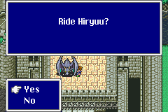
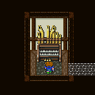

Side-Quest (3)
Ride Hiryuu

กลับไปยังปราสาท Bal จะสามารถขี่ Hiryuu ได้
(แต่มีเรือเหาะแล้ว ก็ไม่จำเป็นต้องขี่ Hiryuu ^^; )
(ปราสาท Bal อยู่ทิศตะวันตกเฉียงใต้ของแผนที่)
Power Song

กลับไปที่หมู่บ้าน Cresent ในบ้านของนักกวี เขาจะให้เล่น Piano ให้ฟัง
หากก่อนหน้านี้สามารถเล่น Piano ได้ครบทั้ง 7 หลัง
เมื่อเล่นเสร็จ คุยกับเขา เขาจะสอน Power Song
ให้
(หมู่บ้าน Cresent อยู่ทิศตะวันออกเฉียงใต้ของแผนที่)
Ribbon
ไปที่หมู่บ้าน Rugor (อยู่ทิศเหนือของแผนที่)
เข้าไปทางร้านขายอุปกรณ์ป้องกัน ผ่านทางลับไปคุยกับเด็กผู้หญิง
เธอจะมอบ Ribbon ให้เพื่อไว้ใช้ต่อสู้กับ Exdeath
Syldra
กลับไปยังถ้ำโจรสลัด (อยู่บริเวณกลางๆ ของแผนที่)
Faris และ Cara จะสัมผัสได้ถึงจิตวิญญาณของ Syldra
และจะได้ Syldra มาเป็น Summon Magic
Magic Lamp
กลับไปยังถ้ำของ Guido

จากนั้นขี่ Chocobo ไปยังน้ำตกด้านทิศตะวันตกเฉียงเหนือของแผนที่
ภายในจะมีตะเกียงอัญเชิญ ใช้เรียกสัตว์อสูรออกมาช่วยเหลือได้

เส้นทางการไปยังน้ำตกมีดังนี้
- เริ่มต้นที่ถ้ำของ Guido
- เดินไปทางทิศตะวันออกจะเจอหมู่บ้าน Tule
- เดินไปทางทิศเหนือของหมู่บ้าน Tule
- เลี้ยวไปทางทิศตะวันออกจะเจอปราสาท Kuza
- เดินไปทางทิศเหนือจะเจอหมู่บ้าน Rugor
- เดินกลับไปทางทิศตะวันตกของหมู่บ้าน Rugor
- ในที่สุดก็จะเจอน้ำตก
* Note : ดูเส้นทางการเดินแบบละเอียดจากแผนที่ Map
* Note : เมื่อใช้ Magic Lamp สัตว์อสูรที่ออกมาจะอ่อนแอลงเรื่อยๆ
แต่สามารถนำ Magic Lamp ไปฟื้นฟูพลังได้ที่นี่ บ่อน้ำใน
Great Trench
Brave
or Chicken
กลับไปที่หมู่บ้าน Mua ทางด้านทิศตะวันตกของ Pyramid
บริเวณบ้านที่อยู่ด้านซ้ายใกล้ๆ กับ Pub จะสามารถเดินเข้าไปได้
เมื่อออกไปจะเจอป่า ให้พยายามหาทางเดินลงไปด้านล่างของป่าให้ได้
หากลงไปได้จะเจอกับผู้เฒ่าคนหนึ่ง
เขาจะถามว่า Butz เป็นคนแบบไหน
กล้าหาญ หรือว่า ขี้ขลาด
หากเป็นคนกล้าหาญ ให้เลือกกล่องซ้ายมือ จะได้รับ Brave Blade
หากเป็นคนขี้ขลาด ให้เลือกกล่องขวามือ จะได้รับ Chicken Knife
ซึ่ง Brave Blade จะมีพลังโจมตีสูงมาก (มากกว่าดาบ Excalibur เสียอีก)
แต่พลังโจมตีของ Brave Blade จะลดลงทุกครั้งที่มีการ "หนี" จากการต่อสู้
ส่วน Chicken Knife มีพลังโจมตีที่ต่ำมาก
แต่พลังโจมตีของ Chicken Knife จะเพิ่มขึ้นทุกครั้งที่มีการ "หนี"
จากการต่อสู้
ซึ่งสามารถเลือกได้เพียงชิ้นเดียวเท่านั้น
Big Guard
Learning Magic เวทย์สุดท้าย เป็นเวทย์รองสุดท้ายจากด้านซ้าย
Big Guard (Mighty Guard, Gaurdian)
สามารถเรียนรู้ได้จาก
Stingray

Level : 93
HP : 30,000
Steal : Dark Matter
Win : Dragon Whip
ซึ่งจะพบได้เฉพาะสถานที่ดังรูปเท่านั้น
เฉพาะในทะเลติดกับภูเขาดังรูปนี้
ซึ่งทะเลนี้จะอยู่เหนือปราสาท Walz (Real World)
การจะพบกับ Stingray อาจใช้เวลานาน
และเมื่อเจอแล้วให้ใช้คำสั่ง Control ของอาชีพ Mediator
Town of Mirage
ลงไปทางตอนใต้ของแผนที่ จะเจอป่า ซึ่งภายในป่าจะมีหมู่บ้าน Mirage
หมู่บ้าน Mirage ถูกดูดเข้าไปใน "Cleft of Dimension" เมื่อ 1,000
ปีก่อน
ในตอนที่โลกถูกแยกออกจากกัน แต่ตอนนี้โลกทั้งสองกลับมารวมกันอีกครั้ง
จึงทำให้หมู่บ้าน Mirage กลับมา
ภายในหมู่บ้านมีเรื่องเล่าว่า หากไปที่หอคอยมังกร เมื่อมังกรตายไป จะกลายเป็นนกฟินิกส์
ภายในหมู่บ้านจะมีร้านค้าอยู่อย่างละ 2 ร้าน
ซึ่งต้องค้นหา เพราะสินค้าในร้านค้าลับจะมีของดีๆ ขาย
Item Shop : มี Elixirs ขายด้วย ในราคา 50,000 Gil
Weapon Shop : มีทั้งดาวกระจาย และ เล็บแมว (Double Lances)
Armor Shop : มีเครื่องป้องกัน Crystal และแหวน Coral ขาย
Magic Shop : นอกจากเวทย์มนต์ระดับ 6 แล้ว ยังมีเวทย์หายากขายด้วย
ภายใน Pub จะมี Thief's Knife ซ่อนอยู่ในถังไม้
ภายในหมู่บ้านจะมี Piano08 ซ่อนอยู่ด้วย

Piano หลังนี้ เป็นหลังสุดท้าย เมื่อเล่นจบแล้วจะได้เป็น Mastered the Piano!!
จากนั้นกลับไปหมู่บ้าน Cresent (อยู่ทางด้านทิศตะวันออกเฉียงใต้ของแผนที่)
เข้าไปในเล่น Piano ให้ นักกวีฟัง เขาจะสอน Hero
Song ให้

ภายในหมู่บ้านจะมีชายคนหนึ่ง ท้าให้ Butz ขี่ Chocobo รอบโลก
ซึ่งหากทำได้เขาจะให้รางวัล
นั่งเรือเหาะกลับไปยังถ้ำของ Guido
จากนั้นขี่ Chocobo วนรอบโลก แล้วกลับมาที่เดิม
กลับไปคุยกับชายคนนั้น เขาจะให้ Mirage Vest เป็นรางวัล
เดินเข้าไปด้านในสุด จะเจอ Black Chocobo
เมื่อได้ Black Chocobo จะสามารถไปเก็บ Summon Magic ได้
Next to
Side-Quest 4


{kind=link}